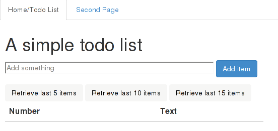
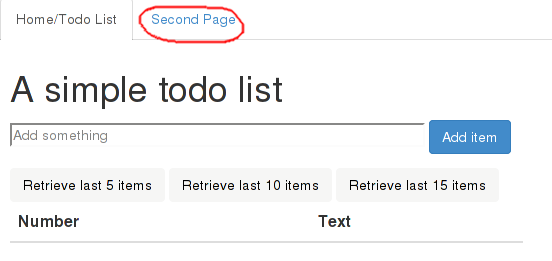
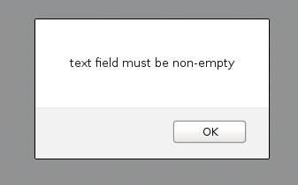
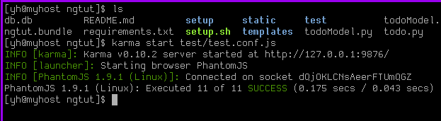
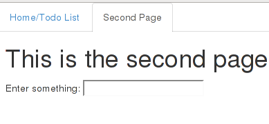

Disclaimer: Opinions expressed on this blog are solely my own and do not express the views or opinions of my employer(s), past or present.
Update Dec 2017: Dear reader, this post was written in 2013 and covers Angular JS 1.0, which is very ancient. In case you are thinking it is still relevant to new versions of Angular, you are wrong, at least based on what I hear from others about newer versions of Angular. I have not done any serious frontend programming for a long time and will not be updating this post.
NOTE: This is a very long post. I tend to be relatively verbose when the situation requires it. This is one of those situations. Do not read this unless you have at least an afternoon’s worth of time to spend on it.
Introduction
This is an introductory AngularJS tutorial based on my roughly 2 to 3 months of experience with it during my summer internship at BillPin. It assumes no knowledge whatsoever about AngularJS and similar MVC/MVVM frameworks. However, working knowledge of JavaScript, some web development experience, familiarity with Git and installation of software on a Linux system is assumed.
Why another AngularJS tutorial
So during my internship, I’ve met quite a few AngularJS developers, and if there is one thing we all agree on 1, it is this - with regards to documentation for AngularJS, there is room for improvement. Towards the end of my internship, I feel that I have accumulated some working knowledge of AngularJS, and I have felt like writing a tutorial, except that you know, I was feeling lazy.
Fast-forward about 1 week and a good friend of mine asks me my opinions about AngularJS and how he’s going through the tutorial on the official site. While it might help a bit, I feel that the tutorial is miles away from how real AngularJS applications are implemented, at least based on the limited experience I’ve had, having gone through the entire tutorial myself. And that was the final straw - I simply had to write an AngularJS tutorial.
Selling Points
What might possibly make this tutorial different from others:
- It features a “full-stack” web application in the form of a todo list.
Don’t ask me why a todo list, I simply can’t think of a simpler application. The frontend code is in AngularJS and there is a backend written in Python (using the Flask framework). However, emphasis will be placed on the AngularJS code, so I will not go too in-depth into the explanation of the Python code. Don’t worry if you don’t know Python or if you don’t know Flask. The backend code is very simple and the concepts are transferrable to other frameworks.
- Code for the application is provided
The repository is housed at https://github.com/yanhan/ngtut . You should clone the repository and run the application on your own machine to get the most out of this tutorial.
- It is probably more real world than other tutorials
Or at least I hope that is the case. Even though this is a single page app, the AngularJS conventions used should be similar to those found in real applications.
- Very detailed explanations provided
I have assumed the reader to be a total beginner in AngularJS, so I have spent a lot of effort in explaining AngularJS concepts in detail, and in as clear a manner as I am able to.
- Working unit tests are included, including sections covering unit testing AngularJS applications
If there is one thing I really like about AngularJS, it is the testability. AngularJS makes it really easy for you to test your applications. Imho that is one killer advantage of AngularJS over its competitors. In this tutorial, I hope to shed some light into how you can go about testing your own AngularJS applications based on the test cases I’ve written for the todo list application featured here.
Disclaimer / Some notes of caution
In my opinion, I am not a very experienced AngularJS developer or even an experienced web developer. As such, I may have made mistakes in terminology. In addition, while I do think the practices shown here are good practices, they may not be the best practices.
Furthermore, the application showcased here was not engineered with security in mind. There are many ways one can exploit this application. Please take that into account when you are designing your own application, as AngularJS does have its own built-in security features, which will not be covered here.
With that said, let’s go on to the tutorial proper.
System requirements
It is assumed that you are using Linux or a UNIX like operating system.
In addition, we will need several pieces of software to run the application. They are:
- Python 2.7x
- virtualenv (for Python 2.7x)
Please install them before you proceed.
Getting the code
I have set up a Git repository here. To get the most out of this tutorial, you should clone it.
File Organization
The repository looks like this:
ngtut
|- README.md
|- setup.sh
|- todoModel.py
|- todo.py
|- todoView.py
|- setup
| |- createtable.sql
|
|- static
| |- navtabs.html
| |- secondPage.html
| |- todo.html
| |- todo.js
|
|- templates
| |- layout.html
| |- main.html
|
|- test
|- test.conf.js
|- lib
| |- angular.min.js
| |- angular-mocks.js
| |- jquery-1.10.2.min.js
|
|- unit
|- SecondController.spec.js
|- TodoController.spec.js
|- TodoDirectives.spec.js
The *.py files on the top level and the entire templates folder are part of the flask backend.
The static folder is for the AngularJS portion of the application, and the test folder is used to house its tests.
Setting up
Before running the application, you will need to run the setup.sh file, which creates a sqlite3 database, sets up a virtualenv folder, and installs flask into that virtualenv:
./setup.sh
You should see a file named db.db and a folder named venv in the directory.
Running the application
On the command prompt, enter (The first character here is a period):
. venv/bin/activate
Followed by:
python todo.py
Now, go to http://127.0.0.1:5000 and you should see the application, in its full glory (or ugliness):

Try playing around with it by adding a few items. You should see the new items added without page refreshes. By default, you can see up to a total of 5 items. Click on the ‘Retrieve last 10 items’ or the ‘Retrieve last 15 items’ button to see more items.
Now, close off your browser and go back to the todo list page. There should be no items on the list. But fret not. Click on the “Retrieve last 5 items” button. You should see the last five items you’ve inserted. The persistence here is due to the use of a sqlite database to store the items (it is created by the setup.sh script).
A high level overview of the application
Now, I wish to give a high level overview of the application, starting from the moment you hit the url http://127.0.0.1:5000. Most of this section covers the Flask backend. Don’t worry if you are not familiar with Flask and do not understand it entirely.
Open the todo.py file, and look at lines 7 and 8:
app.add_url_rule('/', view_func=TodoView.as_view('todo_view'),
methods=['GET'])
When you hit the url http://127.0.0.1:5000, it matches the / endpoint, specified above, so control passes over to the MethodView TodoView, located at todoView.py, lines 9 to 11:
class TodoView(flask.views.MethodView):
def get(self):
return render_template('main.html')
This view is very simple. It simply returns the main.html template, located at templates/main.html:
{% extends "layout.html" %}
{% block content %}
<div ng-app="TodoApp">
<div ng-view></div>
</div>
<script src="/static/todo.js">
</script>
{% endblock content %}
This is written in the Jinja2 templating language. Basically, the templates/main.html page inherits the templates/layout.html page, and on top of that, it includes the stuff between the {% block content %} and the {% endblock content %} delimiters where they are located from the inherited template.
A quick look at templates/layout.html will show the same 2 delimiters, and lines 2 to 8 of the <head> section are shown here:
<script src="http://ajax.googleapis.com/ajax/libs/jquery/1.10.2/jquery.min.js">
</script>
<script src="http://ajax.googleapis.com/ajax/libs/angularjs/1.0.7/angular.min.js">
</script>
<link href="http://netdna.bootstrapcdn.com/bootstrap/3.0.0/css/bootstrap.min.css" rel="stylesheet">
<script src="http://netdna.bootstrapcdn.com/bootstrap/3.0.0/js/bootstrap.min.js"></script>
We include the jQuery 1.10.2, AngularJS 1.0.7 libraries and Twitter Bootstrap 3.0.0. If you require jQuery, remember to include it before AngularJS. AngularJS has its own version of jQuery called jqlite, which is a subset of jQuery. jqlite is used as a fallback to jQuery should the need arises, such as when you use jQuery functionality within AngularJS and the jQuery library is not included. As long as you include the jQuery library before AngularJS, AngularJS will make use of jQuery instead of jqlite.
Going back to the templates/main.html file, and looking at the purely html parts:
<div ng-app="TodoApp">
<div ng-view></div>
</div>
<script src="/static/todo.js">
</script>
Most of these should look familiar, except the weird looking ng-app and ng-view portions. ng-app and ng-view are AngularJS directives, which is one of AngularJS’ defining features. In short, think of a directive as a domain specific language. It should come as no surprise to you that you can implement your own directives, which will be no less powerful than the ones provided by AngularJS, although that is a more advanced topic, which we only take a brief look at in a much later section of this tutorial.
Now, look at the <script> tag. It includes the /static/todo.js file. That file contains an AngularJS module named TodoApp, which is referenced in the ng-app="TodoApp" directive of the topmost <div> element. According to the AngularJS documentation on ngApp here, one HTML document can have only one ngApp directive, and it is from that HTML element onwards where AngularJS “takes control”. Specifically, the AngularJS module TodoApp takes control. So there we have it, now we know that this is a page for the TodoApp module. The ng-view directive will be explained shortly.
Recalling what we have learnt about the application so far:
- We go to the url
http://127.0.0.1:5000 - Flask recognizes it as a request for the endpoint
/, which is handled by a MethodView calledTodoView, and passes control to it. - The
TodoViewMethodView returns the templates/main.html template, after doing some processing of its own. This template contains a<div>with the weird lookingng-appdirective.
But that still does not explain how we get the text box and buttons, considering that all we see don’t see anything like that in the templates/main.html file. We will be getting to that shortly.
The foundation of AngularJS applications - modules
A full fledged AngularJS application will consist of multiple modules. For those of you coming from a Python background, you can think of an AngularJS module as a Python module. In AngularJS, a module is unit of code organization, where you can store controllers, factories, directives and the other AngularJS goodies.
We know from the last section that our module of interest is the TodoApp module, located at static/todo.js. Open that file, and look at lines 1 and 2:
angular
.module('TodoApp', [])
These two lines create a new AngularJS module called TodoApp. The [] argument is used to specify dependencies (which are themselves modules). Because our application is so simple, we only have one module and it is standalone.
AngularJS concept - Routes
Next, turn your attention to lines 3 to 14:
.config(['$routeProvider', function($routeProvider) {
$routeProvider
.when('/', {
templateUrl: '../static/todo.html',
controller: 'TodoController'
})
.when('/secondPage', {
templateUrl: '../static/secondPage.html',
controller: 'SecondController'
})
.otherwise({ redirectTo: '/' });
}])
This is a way to configure routes using the routeProvider service. As a convention, services in AngularJS begin with a $. In short, a service is a singleton that offers some kind of useful functionality. Personally, I have not written any service of my own2, so I guess I am not the right person to explain it. You might want to check out this Stack Overflow question for a better explanation on services than I can provide.
Ignore the weird looking array notation and the "$routeProvider" string for now, we will explain that in a later section.
Back to our main topic. The $routeProvider service has two methods, when and otherwise. The when method takes in 2 arguments, the first is a route, and the second is an object specfiying what to do when AngularJS sees that route. Looking at the AngularJS documentation for $routeProvider here, the object in the second argument can be pretty complicated, but imho the most useful properties, which are the ones I have used so far, are templateUrl and controller.
The templateUrl property specifies the path to the HTML file3 to be displayed when the TodoApp AngularJS module encounters the given route. But where does it insert this HTML? Inside an ng-view. If we look at lines 5 to 7 of templates/main.html which we have seen earlier, there is indeed an ng-view directive at the inner <div> element:
<div ng-app="TodoApp">
<div ng-view></div>
</div>
Therefore, when the TodoApp module sees a request for the route /, it inserts the contents of the HTML file /static/todo.html within the inner <div> element. And indeed, if we open up the static/todo.html file, we see a form element, the three buttons and a table.
So this explains the use of the ng-view directive.
As for the controller property, it specifies the controller to be used. In AngularJS, controllers are used to set up initial state and adding behavior to scope objects. We will cover controllers shortly. For now, it suffices to know that when the TodoApp module sees a request for the route /, it associates a new scope object with a controller named TodoController.
Notice that we have chained a second when method. That is for another page accessible by clicking on the tab labelled Second Page:

Notice how the contents of the page changes, without a page refresh. In addition, observe that the url changes to:
http://127.0.0.1:5000/#/secondPage
from the original:
http://127.0.0.1:5000/#/
Observe that the parts after the # character are exactly the routes we specify to the $routeProvider service.
Now, enter the following url into your browser:
http://127.0.0.1:5000/#/nonexistent
This should take you back to our original page, and that is the purpose of the otherwise method at line 13 of static/todo.js, after the when method calls:
.otherwise({ redirectTo: '/' });
Any unmatched route (one not specified through $routeProvider.when method calls) like '/nonexistent' falls through to the route specified in the otherwise method. While this is optional, I highly recommend you specify a default route using the $routeProvider.otherwise method when making use of the $routeProvider service.
A note on the format of the templateUrl
The more curious may ask why the following templateUrls in static/todo.js are relative paths beginning with ‘..’:
../static/todo.html
../static/secondPage.html
This is due to the way Flask works with regards to serving static files, and has nothing to do with AngularJS. Please do not be too bothered by this.
AngularJS concept - Controller, Model
Still at static/todo.js, look at lines 21 to 30:
.controller('TodoController', [
'$scope',
'$http',
'windowAlert',
function($scope, $http, windowAlert) {
$scope.RETRIEVE_DEFAULT_NR = 5;
$scope.state = {};
$scope.state.todoList = [];
$scope.state.retrieveNr = $scope.RETRIEVE_DEFAULT_NR;
$scope.state.pageName = 'todoList';
Within the TodoApp module, we create a controller named TodoController. Recall from the previous section that this is the controller used when the module sees a request for the route /.
In AngularJS, Controllers are used to set up initial state in a scope object and augment its functionality. I know we’re just getting started with AngularJS, but I want to say this now: it is bad practice to do any kind of DOM manipulation in controllers.4 If there is only one thing you get out of this tutorial, this should be it.
Controllers in AngularJS are functions. Each of the parameters in the function are its dependencies. We can see that TodoController is dependent on $scope, the $http service, and a windowAlert factory (this windowAlert factory is not part of AngularJS, but implemented by me).
Lines 26 to 30 show some assignments to properties within the $scope object. The $scope object here is part of 5 the Model. In AngularJS, the Model should be the one and only source of truth with regards to application state.
The more interesting state variable to us is $scope.state.todoList. Initially, this is set to the array [], which is why we do not see any todo list items upon reaccessing the application even though we might have added some items in the past.
The funny array notation here:
.controller('TodoController', [
'$scope',
'$http',
'windowAlert',
function($scope, $http, windowAlert) {
is used to specify the dependencies explicitly to avoid minification issues. Read the A Note on Minification section here if you are interested in finding out more. In short, it is good practice to use this array notation to specify dependencies explicitly, be it for controllers, or other things. In fact, we’ve seen one example in the AngularJS concept - Routes section above (for the $routeProvider service). If you are confused by what is a dependency is, the arguments to a controller are its dependencies. The more commonly seen dependencies built-in to AngularJS are probably $scope and $http. For now, don’t worry about what other things can be dependencies. You will have a much better idea as your AngularJS expertise grows.
We mentioned that controllers are used to augment behavior for the given $scope object. Observe that in static/todo.js that at lines 32, 54 and 69 of TodoController, we have assigned some functions to $scope.addItem, $scope.retrieveLastNItems and $scope.setAndRetrieveLastNItems respectively. We shall not dive into their code for now, but instead move to something more hands on.
Adding a new todo list item - from start to finish
NOTE: This section is going to jump around a lot of files, but I will show the relevant section of the file and state the filename and the relevant line numbers. I will try to explain to the best of my ability, so stick with me.
Our journey begins from lines 4 to 9 of static/todo.html:
<form method="POST" ng-submit="addItem()">
<fieldset>
<input type="text" placeholder="Add something" size=50 ng-model="state.newItem" />
<button class="btn btn-primary">Add item</button>
</fieldset>
</form>
Recall from the earlier sections that this is the template for the route / and its controller is TodoController, which we covered in the last section. I would like you to focus on line 6:
<input type="text" placeholder="Add something" size=50 ng-model="state.newItem" />
This is the input field where you type some text to add as a todo list item. In particular, look at the ng-model="state.newItem" part. By now, you should know that ng-model is a directive. In this case, we are creating a two-way data binding between the text contained in the input field and the $scope.state.newItem variable. When specifying the variable name in the ng-model directive, we omit the $scope. portion. We did not assign any value to this variable inside the TodoController, but this is fine.
What we mean by a two-way data binding is this: whenever the text inside the input field changes (such as from the user typing new text or editing the contents of the input field), the value of the variable $scope.state.newItem is updated to reflect that value. That is one direction. Correspondingly, in the other direction, should the value of the variable $scope.state.newItem change, the text shown in the input field will be updated to reflect the change. And that completes both directions.
Now, suppose we enter the following text:
Do laundry
into the input field. Due to two-way data binding specified by the ng-model directive, the value of the $scope.state.newItem variable will be updated to the string "Do laundry".
Now, turn your attention towards line 4 of the same file:
<form ng-submit="addItem()">
Observe that there is no action or method attribute on the <form> element. Instead, there is an ng-submit directive. The ng-submit directive will evaluate an AngularJS expression when we submit the form. The expression specified in this case is a call to the $scope.addItem function. Recall that $scope.addItem is assigned a function in TodoController, and that is where we shall look at next. Go to static/todo.js, lines 32 to 52:
$scope.addItem = function() {
if (!$scope.state.newItem) {
windowAlert("text field must be non-empty");
} else {
$http
.post('/todoAdd', {
item: $scope.state.newItem
})
.success(function(data, status, headers, config) {
if (data.success) {
$scope.retrieveLastNItems(
$scope.state.retrieveNr
);
} else {
windowAlert('Adding of item failed');
}
})
.error(function(data, status, headers, config) {
});
}
};
This function contains a single if statement. We shall carry on with the assumption that the $scope.state.newItem variable holds the string "Do laundry" and cover the else case, leaving the then case to a later section.
Now, we see a single post method call to the $http service. The first parameter of the post call specifies the url, which is /todoAdd, while the second parameter specifies the data to send to that url. In this case, the data is a json object with an item property, whose value is the string "Do laundry".
The interesting portion comes after the post method call, where we have the .success and .error calls. $http.post returns a promise with two methods, success and error, and each is used to specify a function (with the four parameters shown) to be called asynchronously when the $http.post finishes, depending on the outcome of the $http.post call. This also means that the $http.post is an AJAX call. For those familiar with jQuery, $http.post is very similar to $.post. There is $http.get, $http.put and other methods as well.
In simple terms, the function specified in the success part will be called if the $http.post call succeeds, and the function specified in the error part will be called if the $http.post call fails. Here, we choose not to do any error handling when the $http.post call errors out, which is why the function given to the error part has an empty body.
We mentioned that the $http.post call is asynchronous. This means that the $http.post call does not block, so if you have any code after it, they will very likely be executed before the proper callback function for the $http.post call gets executed.
While I am a bit hesitant to write this part about what goes on when the $http.post call issues a POST request that hits the url, since this is an AngularJS tutorial, and material here covers Flask. However, I think it will be beneficial for those seeking to see how things play out on the backend. It’s really standard backend web development stuff. So if you are not interested, feel free to skip to the part where I talk about what happens when the $http.post call succeeds and we return to AngularJS land.
Now, to recap, we are at the stage where the $http.post call sends off a POST request to the url /todoAdd. We are leaving AngularJS and going off to our Flask backend, at todo.py, lines 9 and 10:
app.add_url_rule('/todoAdd', view_func=TodoAdd.as_view('todo_add'),
methods=['POST'])
Notice that this endpoint handles the POST method exclusively. Control is passed over to the TodoAdd MethodView, at todoView.py, lines 13 to 17:
class TodoAdd(flask.views.MethodView):
def post(self):
args = json.loads(request.data)
TodoModel.add_item(args['item'])
return jsonify({ 'success': True })
I shall not go into the details, but basically, the data sent over by $http.post is in the request.data variable. We use the built-in json library’s json.loads function to convert the json data to a python dict. Recall that in static/todo.js (lines 36 to 39):
$http
.post('/todoAdd', {
item: $scope.state.newItem
})
the $http.post call sends out an object with an item property. Now, at line 16 of todoView.py:
TodoModel.add_item(args['item'])
We access the item key of the dict converted from the POST request data, and pass it to the TodoModel.add_item function, located at lines 11 to 14 of todoModel.py:
@classmethod
def add_item(cls, item):
_cursor.execute('INSERT INTO todo(text) VALUES(?)', (item, ))
_conn.commit()
The heart of this function is a SQL statement to insert the item into the ‘text’ column of the database. We are done with this function. So we return from this function call and go back to todoView.py, lines 13 to 17:
class TodoAdd(flask.views.MethodView):
def post(self):
args = json.loads(request.data)
TodoModel.add_item(args['item'])
return jsonify({ 'success': True })
We have added the new todo list item, so there is only one thing remaining, the return statement. We return a json object with a single property called success, its value being True.
Now, we are back to AngularJS land, at static/todo.js, lines 36 to 48:
$http
.post('/todoAdd', {
item: $scope.state.newItem
})
.success(function(data, status, headers, config) {
if (data.success) {
$scope.retrieveLastNItems(
$scope.state.retrieveNr
);
} else {
windowAlert('Adding of item failed');
}
})
Since the $http.post call succeeds (a HTTP 200 code is returned), we execute the success callback function. Recall that the Flask backend returns a json object with a property success set to true. We pass the if test and execute the statement:
$scope.retrieveLastNItems($scope.state.retrieveNr);
Which brings us to lines 54 to 67 of the same static/todo.js file:
$scope.retrieveLastNItems = function(n) {
$http
.get('/todoRetrieve/' + n)
.success(function(data, status, headers, config) {
if (data.success) {
$scope.state.todoList = data.todoList;
} else {
windowAlert('Retrieval failed');
}
})
.error(function(data, status, headers, config) {
windowAlert("Retrieval failed");
});
};
This is a $http.get call, with the parameter n being $scope.state.retrieveNr, which is assigned the value $scope.RETRIEVE_DEFAULT_NR (at line 29 of of the same file, static/todo.js), which is 5. Since you are now familiar with $http.post, $http.get works similarly with regards to the promise and callbacks, so I shall not go into detail explaining the same concepts again.
I will be going through the Flask portion after the $http.get call. Feel free to skip this by scrolling down until you see that we have returned to AngularJS land.
Looking at todo.py, lines 11 and 12:
app.add_url_rule('/todoRetrieve/<int:n>',
view_func=TodoRetrieve.as_view('todo_retrieve'), methods=['GET'])
There is a MethodView called TodoRetrieve handling the /todoRetrieve url. It is located at todoView.py, lines 19 to 31:
class TodoRetrieve(flask.views.MethodView):
def get(self, n):
try:
n = int(n)
except ValueError:
n = RETRIEVE_DEFAULT_NR
if n <= 0:
n = RETRIEVE_DEFAULT_NR
todoList = TodoModel.retrieve_last_N_items(n)
return jsonify({
'success': True,
'todoList': [{ 'text': item } for item in todoList]
})
Much of the get function is dedicated to ensuring that n is a non-negative integer. The heart of this function lies in line 27:
todoList = TodoModel.retrieve_last_N_items(n)
at lines 16 to 21 of todoModel.py:
@classmethod
def retrieve_last_N_items(cls, n):
rows = _cursor.execute(
'SELECT text FROM todo ORDER BY id DESC LIMIT ?', (n, )
)
return [r['text'] for r in rows]
Here, we are retrieving the n most recently inserted items, n being 5 in this case.
We go back to todoView.py, lines 19 to 31:
class TodoRetrieve(flask.views.MethodView):
def get(self, n):
try:
n = int(n)
except ValueError:
n = RETRIEVE_DEFAULT_NR
if n <= 0:
n = RETRIEVE_DEFAULT_NR
todoList = TodoModel.retrieve_last_N_items(n)
return jsonify({
'success': True,
'todoList': [{ 'text': item } for item in todoList]
})
After the call to TodoModel.retrieve_last_N_items, the get function returns a json object with 2 properties, success and todoList. The success property holds the value True, while the todoList property is an array of objects, each of which with a single text property containing the text we retrieved from the database.
Now, we return to AngularJS land, lines 54 to 67 of static/todo.js:
$scope.retrieveLastNItems = function(n) {
$http
.get('/todoRetrieve/' + n)
.success(function(data, status, headers, config) {
if (data.success) {
$scope.state.todoList = data.todoList;
} else {
windowAlert('Retrieval failed');
}
})
.error(function(data, status, headers, config) {
windowAlert("Retrieval failed");
});
};
This $http.get call is a success, with the json object returned by our Flask backend available in the data parameter of the callback function specified in the success call of the promise. Recall that our Flask backend returned a json object with a success property with value True, so the if (data.success) test passes. Thus we go to execute the statement:
$scope.state.todoList = data.todoList;
Which sets $scope.state.todoList to the todoList property of the object returned by the Flask backend. This is why we are able to see the todo list updated with the last recently inserted items everytime we insert a new item. Yea, I know it’s expensive to query the database everytime we add a new item, but this is just for illustration purposes.
And recall that this call to $scope.retrieveLastNItems originated from the success callback of the $scope.addItem function in static/todo.js (lines 32 to 52):
$scope.addItem = function() {
if (!$scope.state.newItem) {
windowAlert("text field must be non-empty");
} else {
$http
.post('/todoAdd', {
item: $scope.state.newItem
})
.success(function(data, status, headers, config) {
if (data.success) {
$scope.retrieveLastNItems(
$scope.state.retrieveNr
);
} else {
windowAlert('Adding of item failed');
}
})
.error(function(data, status, headers, config) {
});
}
};
And there are no more statements after the $scope.retrieveLastNItems call. So we are done with this branch, and effectively the $http.post call, and the $scope.addItem call. So we have shown the whole process of adding a new todo list item, from frontend to backend.
While we have shown how the todo list gets updated within the TodoController, this does not answer the question - how does it get displayed in a HTML table? Surely some kind of DOM manipulation is needed. That is the subject of our next section.
AngularJS concept - ng-repeat
Open static/todo.html, and look at lines 21 to 33:
<table class="table">
<thead>
<th>Number</th>
<th>Text</th>
</thead>
<tbody>
<tr ng-repeat="item in state.todoList">
<td>{{ $index + 1 }}</td>
<td>{{ item.text }}</td>
</tr>
</tbody>
</table>
This is where the todo list gets displayed. The interesting part is here:
<tr ng-repeat="item in state.todoList">
<td>{{ $index + 1 }}</td>
<td>{{ item.text }}</td>
</tr>
Where we see an ng-repeat directive. The repeat expression is item in state.todoList, and specifically, we are iterating over the $scope.state.todoList array in the TodoController. This array happens to be the todo list. At each iteration, ng-repeat creates a new scope and binds the current item of state.todoList to the variable item. The entire '<tr>' element and everything within it is the template for the ng-repeat, in otherwords, a piece of HTML to be repeated for each element in $scope.state.todoList.
If that seems like a lot of jargon, it is. I suggest you read it slowly one more time. But the idea behind ng-repeat is very simple: ng-repeat repeats the entire HTML block it appears in for each element we are iterating over.
Confused? I will give you a more concrete example. Suppose $scope.state.todoList has the value
[{ text: 'go out with friends' }, { text: 'watch tv' }, { text: 'Do laundry' }]
Then, what we will get is:
<tr>
<td>{{ $index + 1 }}</td>
<td>{{ item.text }}</td>
</tr>
<tr>
<td>{{ $index + 1 }}</td>
<td>{{ item.text }}</td>
</tr>
<tr>
<td>{{ $index + 1 }}</td>
<td>{{ item.text }}</td>
</tr>
So for the first <tr> element you see here, item refers to the object { text: 'go out with friends' }, the 0th element of $scope.state.todoList. For the second <tr> element, item refers to the object { text: 'watch tv' }, the 1th element of $scope.state.todoList. For the third <tr> element, item refers to the object { text: 'Do laundry' }, the 2nd element of $scope.state.todoList.
The $index variable is something unique to ng-repeat. It is the offset of the element we are iterating over, starting from 0.
Therefore, $index has the value 0 for the first <tr> element, the value 1 for the second <tr> element, and the value 2 for the final <tr> element.
Now that we know all that, and you know JavaScript, you can probably infer that the final result of the ng-repeat will look something like:
<tr>
<td>1</td>
<td>go out with friends</td>
</tr>
<tr>
<td>2</td>
<td>watch tv</td>
</tr>
<tr>
<td>3</td>
<td>Do laundry</td>
</tr>
Tada! Notice how there isn’t any DOM manipulation, like deleting existing rows in the table, and updating the table with the new todo list entries by adding new rows to it representing the updated todo list items. There is none of that. The table just gets updated. It’s just like magic. Ok, we all know it’s not magic, but yea.
While you will probably need to do DOM manipulations for more complex applications, I’m pretty sure that the use case we’ve just seen is very common. In other words, ensuring that what the user sees (the View) matches the application state (the Model). And that is our focus for the next section.
AngularJS concepts - tying together the Model, View, Controller
So far, we have seen quite a bit of AngularJS. Certainly not in terms of code, but in terms of concepts.
The Model refers to the application state, or the various scope objects. In AngularJS, these scope objects should be the one and only source of truth with regards to the application state.
The View is what the user sees. An example is the static/todo.html file, which houses the HTML template of our todo list application.
The Controller is used to set up initial state (the Model) by modifying the scope object, and augmenting the scope object with additional behaviour, like what we have done above by adding some functions to the given $scope object. You can think of this augmentation as setting up the business logic of your application.
Now, you may see AngularJS referred to as an MVVM framework, or Model View View Model. That is correct as well, due to the two-way data binding. Whenever the Model changes, the View is updated; whenever the View changes, the Model is updated. The image below from the AngularJS docs illustrates this concept:

The glue between Model and View is the Directive, the most notable being ng-model and ng-repeat. Directives are a lot more than that, but for now this explanation suffices.
Do take a look at the diagram located here. I hope that this tutorial has helped you to understand at least some of it. But this is not the end of the tutorial (evil laugh)
Now, let’s move on to another AngularJS concept - the Factory.
AngularJS concept - Factories
Try adding an empty item to the todo list. You should see an alert box:

This is due to lines 32 to 35 of static/todo.js:
$scope.addItem = function() {
if (!$scope.state.newItem) {
windowAlert("text field must be non-empty");
} else {
Which causes any falsy value in $scope.state.newItem to fall into that branch, and call the windowAlert function.
Now, look at lines 21 to 25 of static/todo.js:
.controller('TodoController', [
'$scope',
'$http',
'windowAlert',
function($scope, $http, windowAlert) {
See how we specified windowAlert as a dependency. In the section titled “AngularJS concept - Controller, Model”, I mentioned that windowAlert is a factory that I implemented. In fact, it’s right above the definition for TodoController, at lines 15 to 20 of static/todo.js:
.factory('windowAlert', [
'$window',
function($window) {
return $window.alert;
}
])
Here, we are creating a factory called windowAlert. This factory is dependent on the $window service (built-in to AngularJS). The actual value of the windowAlert factory is the return value of the function, which is $window.alert. This is in fact the JavaScript window.alert method provided through AngularJS’ $window service. The reason we are defining a factory to house $window.alert is for testing reasons, as we shall see later.
Back to the main topic of this section, a factory is very similar to a service. You should check out this stack overflow question and this link for explanations better than I can offer with regards to the difference between factories and services.
But a probably correct (I hope) and tldr explanation is: A factory is a singleton object.
So whenever we see a windowAlert call, such as in lines 32 to 35 of static/todo.js:
$scope.addItem = function() {
if (!$scope.state.newItem) {
windowAlert("text field must be non-empty");
} else {
we can substitute the windowAlert with whatever is returned by the windowAlert factory function, so it is essentially:
$scope.addItem = function() {
if (!$scope.state.newItem) {
$window.alert("text field must be non-empty");
} else {
which is why we get the alert box whenever we try to add an empty item.
The retrieve buttons
Now onto the final feature I will be covering, the retrieve buttons. At lines 11 to 19 of static/todo.html:
<button class="btn" ng-click="setAndRetrieveLastNItems(5)">
Retrieve last 5 items
</button>
<button class="btn" ng-click="setAndRetrieveLastNItems(10)">
Retrieve last 10 items
</button>
<button class="btn" ng-click="setAndRetrieveLastNItems(15)">
Retrieve last 15 items
</button>
We see the template for the buttons. Focus on the ng-click directive. Suppose we click on the “Retrieve last 15 items” button. This will result in a call to the $scope.setAndRetrieveLastNItems function defined at lines 69 to 72 of static/todo.js:
$scope.setAndRetrieveLastNItems = function(n) {
$scope.state.retrieveNr = n;
$scope.retrieveLastNItems($scope.state.retrieveNr);
};
with the argument n set to the value 15. The scope variable $scope.state.retrieveNr is modified to 15, and the $scope.retrieveLastNItems is called. Because we have gone through the flow of the $scope.retrieveLastNItems function above, we shall not do it here. In this case, it retrieves the last 15 inserted todo list items from the database and updates the todo list with those items.
And we are done in terms of features of the application!6 Give yourself a pat on the back for having come so far!
You might want to familiarize yourself with what we have covered so far before moving on.
Next, we move on to something I personally find very important - testing.
AngularJS Testing - setting up
There are many JavaScript testing frameworks and test runners, but AngularJS works very well with Karma. In fact, that is the test runner used in the official AngularJS tutorial.
To use Karma, you will have to install node.js. I’ve tested this with node.js v0.10.15, and I believe a reasonably modern version of node.js should work fine.
The version of Karma I’m using is v0.10.2. Once you have installed node.js, install karma globally by:
npm -g install karma@0.10.2
We will also need a browser to capture the output from Karma. For this, I personally prefer PhantomJS. You can also use Firefox, Chrome, or any other modern browser, but you will have to edit the Karma configuration file.
The version of PhantomJS that I’ve worked with is v1.9.1. You will have to install it globally:
npm -g install phantomjs@1.9.1
And we are done with the software needed for running the tests. Let us take a look at the Karma configuration file.
AngularJS Testing - the Karma configuration file
Now because the Karma configuration file is pretty long, I shall not paste it in its entirety. Instead, I will go through it part by part. The file is located at test/test.conf.js.
Look at lines 7 and 8 of test/test.conf.js:
// base path, that will be used to resolve files and exclude
basePath: '..',
This specifies the path where Karma starts looking for files, relative to the directory the test/test.conf.js file is located in. For convenience reasons, we set it to '..', or one directory above the test folder. That happens to be the root of the repository. We shall see why later.
Now, look at line 10 of test/test.conf.js:
hostname: '127.0.0.1',
This specifies the server where browsers will capture output from running the tests. You will be running the tests on your own machine, hence the localhost IP address. I’ve used 127.0.0.1 instead of localhost in case you have configured localhost to something else in /etc/hosts.
Moving on to lines 13 and 14 of test/test.conf.js:
// frameworks to use
frameworks: ['jasmine'],
We see that jasmine is specified as a test framework to use. Notice how we said Karma is a test runner. It is used to run tests. There is a nice test framework called jasmine that comes with Karma, so we will be using that.
On to lines 17 to 24 of test/test.conf.js:
// list of files / patterns to load in the browser
files: [
'test/lib/jquery-1.10.2.min.js',
'test/lib/angular.min.js',
'test/lib/angular-mocks.js',
'static/todo.js',
'test/**/*.spec.js'
],
Here, we specify a list of files to be loaded. This includes all the files for the actual test cases and any file they require. You can use wildcard patterns such as ‘*’ and ‘**’. I shall not go into their details. Only the line:
test/**/*.spec.js
includes the actual test cases. In fact, the test cases are located at the test/unit folder, and end with the extension ‘.spec.js’.
Notice the order in which we specify the files to be loaded. The order matters. In an earlier section, we said that if we are using jQuery, we will have to include it before the AngularJS library. The same applies here.
There is an angular-mocks.js file after the angular.min.js file. That is a mock library that we must include for our AngularJS tests. If you need it for your future work, you can find it at the angular-seed repository, specifically here.
After that, we specify all the AngularJS files that we have written and require. In this case, we only have one, static/todo.js.
Finally, we include our test files using the wildcard pattern test/**/*.spec.js.
Two observations.
Notice all the paths here are relative to the root of the repository. This is due to us specifying the
basePathproperty to be'..'above. If the basepath was set to thetestfolder, we will have to write../test/lib/jquery-1.10.2.min.js,../static/todo.js, and so on.Those with a very good memory will recall that our application uses CDNs for the JavaScript files. Open templates/layout.html and look at lines 3 to 6:
<script src="http://ajax.googleapis.com/ajax/libs/jquery/1.10.2/jquery.min.js">
</script>
<script src="http://ajax.googleapis.com/ajax/libs/angularjs/1.0.7/angular.min.js">
</script>
When running the tests, the libraries required by the AngularJS code we are testing need to be on our local filesystem. Do take note of this if you are using some kind of CDN, or if the libraries you are using are not inside your repository.
I will skip the exclude and reporters properties and move on to lines 37 and 38 of test/test.conf.js:
// web server port
port: 9876,
This is the port where the Karma will be running. Change it to another port if you have something else running on it.
I’m going to skip over the colors, loglevel and autoWatch properties and move on to lines 54 to 62 of test/test.conf.js:
// Start these browsers, currently available:
// - Chrome
// - ChromeCanary
// - Firefox
// - Opera
// - Safari (only Mac)
// - PhantomJS
// - IE (only Windows)
browsers: ['PhantomJS'],
Earlier, I mentioned that you can use another browser than PhantomJS, but you will have to edit the configuration file. This is the section where you have to edit. Suppose you want to use Firefox instead of PhantomJS. So you will edit the browsers property to:
browsers: ['Firefox'],
Next, moving on to lines 69 to 71 of test/test.conf.js:
// Continuous Integration mode
// if true, it capture browsers, run tests and exit
singleRun: true
The singleRun option determines if the tests are just run once or continuously (until you tell Karma to stop). Here, we choose to run it once, so after running the tests, Karma exits.
Earlier, I skipped the autoWatch option, at lines 50 to 51:
// enable / disable watching file and executing tests whenever any file changes
autoWatch: false,
The autoWatch property, if set to true, will monitor the files listed inside the files array for changes. autoWatch: true combined with the singleRun: false will continuously monitor the files array for changes and run the tests upon any change.
In case you are curious, I did not write this configuration file from scratch. The initial configuration file is generated using karma init.
Running the tests
Before we move on with the explanation of the test cases, I think it will be good for you to see that the tests are working. Be sure to have installed the required software as outlined in the “AngularJS Testing - setting up” section above.
To run the tests from the root of the repository:
karma start test/test.conf.js
You should see something like this:

Alternatively, you can run the tests in the test folder:
cd test
karma start test.conf.js
If you are unable to run the test cases for some reason and you are using a different version for some piece of software, I highly recommend that you use the versions that I’ve used, as stated above.
On Jasmine
Because we are using Jasmine as a test framework, there will be some Jasmine conventions that you have to understand. Here is a link to a short and sweet Jasmine tutorial. Do read it so you are more familiar with Jasmine before moving on to the next section, because I will assume some basic familiarity with Jasmine and talk more about the stuff specific to AngularJS testing.
A note on the Testing sections
While I know how to write tests for AngularJS applications and I certainly do think that I know a thing or two about testing AngularJS apps, I do not know this area as well as the non-testing portion. There are many things which I will not be able to explain, because I do not have a good working knowledge of their internals.
In particular, the sections below will contain much fewer explanations than the ones above and may seem very hand-wavy at times. This is deliberate. It does not mean that I am lazy, but that I simply do not know enough to explain the information in detail without misleading you and providing you with wrong information.
If you happen to be an AngularJS pro and know a lot about AngularJS testing (what are the chances of such a person reading this tutorial), please write a better tutorial on AngularJS testing than this one. I am sure a lot of people will be very grateful to you, and you will be doing a great thing.
If you are just starting out in AngularJS and become really good at it one day, consider doing a good deed by writing a really good tutorial on AngularJS testing. That will be the best way to contribute back to the community.
Regardless, I believe that you will be able to get a much better idea of testing AngularJS code after reading the sections below.
Testing the TodoController
Open up test/unit/TodoController.spec.js, and look at lines 1 to 10:
describe('TodoController', function() {
var $scope
, $httpBackend
, ctrl
, windowAlert;
beforeEach(module('TodoApp', function($provide) {
windowAlert = jasmine.createSpy();
$provide.value('windowAlert', windowAlert);
}));
Every Jasmine test suite starts with a describe function. describes can be nested. You can have multiple top level describes. The first argument to describe is a string describing the test suite. Here, we supply the string "TodoController", since this test suite is for testing the TodoController.
The second argument to describe is a function. There are 5 main types of “things” within the function:
- variable declarations
beforeEachfunctionsafterEachfunctions- nested
describefunctions itfunctions
We see 4 variable declarations from lines 2 to 5.
Within the outermost describe, there are 2 top level beforeEach functions at lines 7 and 12; one top level afterEach function at line 18; one top level it function at line 23; three top level describe functions at lines 29, 99, 150.
AngularJS Testing concept - initializing the module
Let’s look at the first describe block at lines 7 to 10:
beforeEach(module('TodoApp', function($provide) {
windowAlert = jasmine.createSpy();
$provide.value('windowAlert', windowAlert);
}));
For AngularJS tests, be sure to include a beforeEach function inside each top level describe to tell it which module you are trying to test. I cannot stress this further. There was once when I was writing a test case and it mysteriously failed. Everything looks fine to me, and I’ve tried almost every trick in the book. It was only after many minutes of looking until I realized I forgot to include such a beforeEach block with the module function.
Here, we are saying we want to load the TodoApp module. The second argument is a function, and it is optional. But if provided, it should have a $provide parameter. Here, we create a mock using jasmine.createSpy, then mock out the actual windowAlert factory using that mock by calling the $provide.value function, supplying the name of what we want to mock out ('windowAlert'), and the mock (the windowAlert variable).
Let’s look at the second beforeEach block, at lines 12 to 16 of test/unit/TodoController.spec.js:
beforeEach(inject(function(_$httpBackend_, $rootScope, $controller) {
$httpBackend = _$httpBackend_;
$scope = $rootScope.$new();
ctrl = $controller('TodoController', { $scope: $scope });
}));
(This is one of those really hand-wavy sections, apologies).
Here, we are injecting some services. Namely, the $httpBackend, $rootScope and $controller services.
The $rootScope service is used to create new scope objects using the $rootScope.$new method, as we are doing in line 14.
The $controller service is used to create new controllers. The first argument is the name of the controller, and the second argument is an object which contains a $scope property, whose value is a newly created scope object.
At line 13, we see
$httpBackend = _$httpBackend_;
Notice that at line 3, we have declared the $httpBackend variable. The underscores in _$httpBackend_ parameter are used to name $httpBackend under a different name so we can assign it to a variable of the same name. For a more detailed explanation, see this stack overflow question.
The $httpBackend service is made available through the angular-mock library. It is used to mock out a backend, as we shall see soon.
First test case
For Jasmine, actual test cases are the it blocks. Let’s look at our first actual test case, on lines 23 to 27 of test/unit/TodoController.spec.js:
it('initialization sets up the scope variables', function() {
expect($scope.state).toEqual(jasmine.any(Object));
expect($scope.state.todoList).toEqual([]);
expect($scope.state.retrieveNr).toBe($scope.RETRIEVE_DEFAULT_NR);
});
Here, we are ensuring that the TodoController is setting up the initial state properly. Recall that we have created one TodoController in the beforeEach block with an inject. That controller is available through the ctrl variable, even though we won’t need it in this case.
Looking at the relevant part of TodoController that we are testing, that is lines 21 to 30 of static/todo.js:
.controller('TodoController', [
'$scope',
'$http',
'windowAlert',
function($scope, $http, windowAlert) {
$scope.RETRIEVE_DEFAULT_NR = 5;
$scope.state = {};
$scope.state.todoList = [];
$scope.state.retrieveNr = $scope.RETRIEVE_DEFAULT_NR;
$scope.state.pageName = 'todoList';
We see that this line:
expect($scope.state).toEqual(jasmine.any(Object));
contains a single assertion, given by the expect. We are asserting that when the TodoController code has finished running, the $scope.state variable is an object. In this case, we do not care about the contents of the object, hence we use jasmine.any(Object), which is a way of saying we do not care what the actual value of $scope.state is, as long as it is some object. There is jasmine.any(Number), jasmine.any(Function), etc, and I believe it works for any JavaScript type.
Now, the second assertion in that it block (line 25 of test/unit/TodoController.spec.js):
expect($scope.state.todoList).toEqual([]);
We are asserting that $scope.state.todoList is initially an empty array.
Finally, the third and last assertion in the it block (line 26 of test/unit/TodoController.spec.js):
expect($scope.state.retrieveNr).toBe($scope.RETRIEVE_DEFAULT_NR);
We are asserting that $scope.state.retrieveNr has the same value as $scope.RETRIEVE_DEFAULT_NR.
Simple, right? That’s why you should write more tests.
A note on toBe and toEqual
In general, toBe is used for comparing non object values, such as integers, strings, booleans. toEqual is used for comparing arrays, objects and the like.
TodoController::addItem - tests
Now, let’s move on to our second test case, lines 29 to 38 of test/unit/TodoController.spec.js:
describe('addItem', function() {
var itemToAdd;
it('should not be able to add undefined item', function() {
$scope.state.newItem = undefined;
$scope.addItem();
expect(windowAlert.calls.length).toBe(1);
expect(windowAlert.calls[0].args[0]).toBe(
'text field must be non-empty'
);
});
This time, the it block we are interested in is located within a nested describe block. We can see that we are trying to test the addItem function.
Initially, we set $scope.state.newItem to be undefined, and proceed to call the $scope.addItem function. Looking at the code for that function (lines 32 to 52, static/todo.js):
$scope.addItem = function() {
if (!$scope.state.newItem) {
windowAlert("text field must be non-empty");
} else {
$http
.post('/todoAdd', {
item: $scope.state.newItem
})
.success(function(data, status, headers, config) {
if (data.success) {
$scope.retrieveLastNItems(
$scope.state.retrieveNr
);
} else {
windowAlert('Adding of item failed');
}
})
.error(function(data, status, headers, config) {
});
}
};
It is not hard to see that we will end up inside the then part of the outermost if statement, considering that undefined is a falsy7 value. So there should be a windowAlert call.
Let’s look at the relevant part of the it block that tests for the windowAlert call (lines 34 to 37, test/unit/TodoController.spec.js):
expect(windowAlert.calls.length).toBe(1);
expect(windowAlert.calls[0].args[0]).toBe(
'text field must be non-empty'
);
On line 34, we are asserting that the windowAlert factory should only be called 1 time.
Lines 35 to 37 check that the first argument (args[0]) of the first call (calls[0]) to the windowAlert factory is the string 'text field must be non-empty'.
A similar way to check for the argument is:
expect(windowAlert.calls[0].args).toEqual(['text field must be non-empty']);
Which tests the entire argument list of the first call to windowAlert instead of just the first argument.
Yet another way to write the assertion is:
expect(windowAlert).toHaveBeenCalledWith(
'text field must be non-empty'
);
However, the toHaveBeenCalledWith matcher will pass if there is any call to the function with the given argument list. In this case, there is only one call to windowAlert, so using toHaveBeenCalledWith is fine. In general, it is probably safer to use the first two ways.
So why are we able to carry out those assertions on windowAlert, if it is a JavaScript function? Recall that at lines 7 to 10 of test/unit/TodoController.spec.js:
beforeEach(module('TodoApp', function($provide) {
windowAlert = jasmine.createSpy();
$provide.value('windowAlert', windowAlert);
}));
we mocked out the windowAlert factory using a jasmine spy. This windowAlert variable is declared in line 5. Therefore, we are not actually calling the real windowAlert, but a jasmine spy we put in place of it. The ease which we are able to mock out factories and services such as windowAlert for testing purposes is one powerful feature of AngularJS.
Yet another observation. Have you noticed that the beforeEach blocks in the outermost describe block are executed even though the it block we are looking at is within an inner describe block? That is how Jasmine works. The beforeEach blocks are executed in order for every it block, from the ones located in the outermost describe block to the describe block housing that particular it block, before the code inside the it block is executed. There is also afterEach, which executes in the reverse order of beforeEach, but after the it block finishes running.
With what we have just covered, you should be able to understand the it block located at lines 39 to 46 of test/unit/TodoController.spec.js on your own. It is very similar to the it block we just covered.
A test using $httpBackend
Now, look at lines 47 to 74 of test/unit/TodoController.spec.js:
describe('add non-empty item', function() {
var postUrl;
beforeEach(function() {
postUrl = '/todoAdd';
// mock out call to retrieveLastNItems
$scope.retrieveLastNItems = jasmine.createSpy();
});
describe('on success', function() {
var itemToAdd;
beforeEach(function() {
itemToAdd = 'do my laundry';
$httpBackend
.expectPOST(postUrl, {
item: itemToAdd
})
.respond(200, { success: true });
});
it('should call retrieveLastNItems', function() {
$scope.state.newItem = itemToAdd;
$scope.addItem();
// $httpBackend.flush() required here
$httpBackend.flush();
expect($scope.retrieveLastNItems.calls.length).toBe(1);
expect($scope.retrieveLastNItems.calls[0].args[0]).toBe(
$scope.RETRIEVE_DEFAULT_NR
);
});
});
Most of the code should be familiar to you. Notice that the it block we are interested in is nested within two describe blocks (not counting the outermost describe block where the outermost describe block shown here is located).
Notice that at line 52:
$scope.retrieveLastNItems = jasmine.createSpy();
We are mocking out a TodoController function. This is possible because we have already initialized the TodoController in a beforeEach block located outside of this describe block, at line 15.
At lines 64 to 66:
it('should call retrieveLastNItems', function() {
$scope.state.newItem = itemToAdd;
$scope.addItem();
We are simulating the user typing into the input field and adding a new todo list item. Looking at the relevant portion of the TodoController code (lines 32 to 52, static/todo.js):
$scope.addItem = function() {
if (!$scope.state.newItem) {
windowAlert("text field must be non-empty");
} else {
$http
.post('/todoAdd', {
item: $scope.state.newItem
})
.success(function(data, status, headers, config) {
if (data.success) {
$scope.retrieveLastNItems(
$scope.state.retrieveNr
);
} else {
windowAlert('Adding of item failed');
}
})
.error(function(data, status, headers, config) {
});
}
};
We see that the outermost if fails, so we move on to the $http.post part. Are we actually going to start up our backend for this POST request? No. This is a unit test, not an end to end test. We will be making use of the $httpBackend service here.
Look at lines 54 to 63 of test/unit/TodoController.spec.js:
describe('on success', function() {
var itemToAdd;
beforeEach(function() {
itemToAdd = 'do my laundry';
$httpBackend
.expectPOST(postUrl, {
item: itemToAdd
})
.respond(200, { success: true });
});
We see a $httpBackend.expectPOST call. That works exactly like what its name says, that we are expecting a POST call to our backend. The first argument is the url, at line 50:
postUrl = '/todoAdd';
which is set to the string 'todoAdd', which is exactly the url provided in the $http.post in the $scope.addItem function.
The second argument is the data the POST request should contain. In this case, it is an object with one property named item with value do my laundry. Looking at lines 64 to 66 of the it block:
it('should call retrieveLastNItems', function() {
$scope.state.newItem = itemToAdd;
$scope.addItem();
the todo list item to be added is exactly that same variable, which has the same value.
Now, recall that our backend returns a HTTP code and a JSON object upon success. If we look at line 62:
$httpBackend
.expectPOST(postUrl, {
item: itemToAdd
})
.respond(200, { success: true });
We see a .respond(200, { success: true }) call. That is a call to the object returned by $httpBackend.expectPOST, with the first argument being the HTTP code (200 in this case), and the second argument being the object it should return, should it encounter the expected POST request.
Going back to our it block at lines 64 to 73 of test/unit/TodoController.spec.js:
it('should call retrieveLastNItems', function() {
$scope.state.newItem = itemToAdd;
$scope.addItem();
// $httpBackend.flush() required here
$httpBackend.flush();
expect($scope.retrieveLastNItems.calls.length).toBe(1);
expect($scope.retrieveLastNItems.calls[0].args[0]).toBe(
$scope.RETRIEVE_DEFAULT_NR
);
});
See the $httpBackend.flush()? Prior to calling $httpBackend.flush(), the $httpBackend will not respond to any calls to the $http service. This just tells the $httpBackend to go on and respond to those calls.
Let’s take a look at the success callback of the $http.post call in the $scope.addItem function, lines 40 to 48 of static/todo.js:
.success(function(data, status, headers, config) {
if (data.success) {
$scope.retrieveLastNItems(
$scope.state.retrieveNr
);
} else {
windowAlert('Adding of item failed');
}
})
Since our $httpBackend returns HTTP code 200 and an object with property success set to true, we should end up calling the $scope.retrieveLastNItems function with argument $scope.state.retrieveNr.
But recall that in lines 49 to 53 of test/unit/TodoController.spec.js:
beforeEach(function() {
postUrl = '/todoAdd';
// mock out call to retrieveLastNItems
$scope.retrieveLastNItems = jasmine.createSpy();
});
we have mocked out the $scope.retrieveLastNItems function with a jasmine spy. Therefore, we will not be calling the actual $scope.retrieveLastNItems function.
And at the remaining part of the it block at lines 68 to 72 of test/unit/TodoController.spec.js, we assert some facts about the spy:
$httpBackend.flush();
expect($scope.retrieveLastNItems.calls.length).toBe(1);
expect($scope.retrieveLastNItems.calls[0].args[0]).toBe(
$scope.RETRIEVE_DEFAULT_NR
);
So why do we mock out the call to $scope.retrieveLastNItems instead of calling the actual function? Well, because:
- We have a separate test suite for it from lines 99 to 148 of test/unit/TodoController.spec.js
- It is actually quite a bit of work to test that function. In particular, we will need to set up a
$httpBackend.get, and there are 3 possible outcomes for the call to$scope.retrieveLastNItems. So that means 3 extra test cases. - I am being really lazy here. But look at point 1. We already have a separate test for that function. There is really no reason we should test that function here again. So checking that it actually gets called (rather, that the spy gets called) is sufficient.
As an extended exercise, see if you can understand the tests in test/unit/TodoController.spec.js that I did not cover here. You have learnt all the concepts required to understand them.
Optional - A custom directive
This section and the ones below cover slightly more advanced material that you may to cover on a future reading. Feel free to skip to the conclusion below.
If you wish to continue, brace yourself for a tough ride.
Directives are one of the most powerful features of AngularJS. To convince yourself of this, just look at our earlier examples covering the built-in AngularJS directives ng-model and ng-repeat. They are very easy to use and do things that one will consider difficult if one has to implement them by hand.
In fact, looking at this example at lines 27 to 30 of static/todo.html:
<tr ng-repeat="item in state.todoList">
<td>{{ $index + 1 }}</td>
<td>{{ item.text }}</td>
</tr>
It would seem that we are not writing pure HTML at all, but a mix of HTML and JavaScript, with this weird brackety syntax for interpolating variables. This piece of code does a few things that you will have to implement if you are not using AngularJS:
- Upon a change to the todo list, remove all the
<tr>in the<table>. - After removing all the existing rows of the table, create a new
<tr>for each item in the todo list and insert it into the<table>.
Well, if you are a seasoned JavaScript programmer, that is probably not too difficult to you. However, do you see any kind of DOM manipulation here or anywhere else in the code that allows us to achieve this? Is there any code that delete rows from or insert rows into the table? No. All that is taken care of by the ng-repeat directive and the other underlying mechanisms provided by AngularJS.
While our description of the code looking like a mish mash of HTML and JavaScript is not wrong, that does not adequately describe how we feel when we write it. It feels as if we are writing not in HTML or JavaScript, but some other language, one which offers us greater abstractions and stands at a higher level, one more suited for our needs. In other words, a domain specific language, or DSL in short. And that is what directives are.
After all that talk, let us look at a real example of a directive. Its functionality is very simple, so I hope it doesn’t disappoint you.
Notice the tabs at the top of the todo list application:
And on the second page:

Observe how the active tab is set to the correct tab whenever we change to a different page (the active tab is the one whose text is in black color). This is done through the use of a directive. So now you might be thinking, ok, this is nothing special. Yea indeed I don’t think it’s anything too special as well. That said, the code to generate this tab in the todo list template, it’s just one line. In fact, it’s the first line of the static/todo.html file:
<navtabs page-name="state.pageName"></navtabs>
And for the second page, it is one line as well, at the first line of static/secondPage.html:
<navtabs page-name="state.pageName"></navtabs>
Ok, hopefully the fact that it is just one line should catch your attention. Of course the implementation is more than one line, but to use it in a view, it really is just this one line. And the fact that we are using this weird tag named navtabs which is not a real HTML tag should capture even more of your attention. Right now, there should be one thought in your head that goes like this - what the hell is going on?8 Oh and did I mention? This thing is testable. And I have written a test case for it9, which we shall see soon.
Now, the code for the navtabs directive, lines 75 to 94 of static/todo.js:
.directive('navtabs', function() {
return {
restrict: 'E',
replace: true,
templateUrl: '../static/navtabs.html',
scope: {
pageName: '='
},
controller: [
'$scope',
function($scope) {
this.selectTabIfOnPage = function(tab) {
if (tab.name === $scope.pageName) {
tab.selected = true;
}
};
}
]
};
})
Ok, that looks complicated. And indeed it is. In fact the original directive for the tab was not written this way. I changed it to this after seeing an example on the AngularJS homepage. I have to be honest and tell you that writing directives is not easy. In fact, when I write a directive, I usually need to look up the official AngularJS docs and read some stack overflow questions before I get it right. But the effort is worth it once your directive is done.
Anyway, here goes. In a directive, we declare a function that returns an object. This object is at the heart of writing directives, and there are a number of properties for which you can set depending on what you intend to do.
Here, we set the restrict property to the string 'E' to say that it is only meant to be used like a HTML element. This is why we were able to use it like this:
<navtabs page-name="state.pageName"></navtabs>
even though navtabs is not a real HTML element.
There is also 'C' (use as a class), 'A' (use as an attribute) and the more obscure M (use as a comment; I’ve never used this before). So if you want to use a directive like how you would use ng-model (like an attribute), you will have to set restrict to the string 'A'.
We will skip the replace property for now and look at the templateUrl property. Just like its name suggests, this holds a path to the file containing the template for this directive. Here is the full template (static/navtabs.html):
<ul class="nav nav-tabs">
<tab name="todoList" href="#/">Home/Todo List</tab>
<tab name="secondPage" href="#/secondPage">Second Page</tab>
</ul>
Ah… the picture becomes more clear. We are using a Twitter Bootstrap navtab, hence the <ul> element with the nav and nav-tabs CSS classes. The two <tab> elements inside are themselves directives (which we will cover very shortly), but they should look quite intuitive.
Now, let’s look at the replace property, at line 78 of static/todo.js:
replace: true,
When set to true, it means we want to replace the entire <navtabs> element with the template. The alternative is false, which will insert the template under the <navtabs> element. Yea it does work even though <navtabs> is not a real HTML tag.
Still on static/todo.js, lines 80 to 82:
scope: {
pageName: '='
},
This is one of the more confusing aspects of writing directives, especially when you are just starting out. Earlier in this tutorial, I mentioned that AngularJS has an elaborate scope hierarchy. It turns out that directives can have their own scope as well. In fact, you’ve seen an example in ng-repeat, where each item refers to a different object. This could not have been possible if they were sharing the same scope, since the same name should refer to the same object.
What we’re doing here is, we are saying that the directive should have an ‘isolate’ scope. An isolate scope does not inherit from the parent scope. In this case, the parent scope refers to the scope of the controller for the page we are on (TodoController for the todo list page; SecondController for the second page). An isolate scope is created for a directive when we have a scope property whose value is an object, like what we have here.
Here, we see that the object has a property called pageName. The value of the pageName is the string '='. Properties in this object are used to specify scope properties, so this means we want a scope property named pageName. That is half the story. The '=' means we want to establish a two-way data binding between $scope.pageName and the variable passed to an attribute named page-name on the <navtabs> element. Confused? Don’t worry. Let’s look at how we use the navtabs directive, on the first line of static/todo.html:
<navtabs page-name="state.pageName"></navtabs>
Like we’ve mentioned, there is a page-name attribute on the <navtabs> element. It has a value of state.pageName. If we look at the TodoController code at static/todo.js, line 30:
$scope.state.pageName = 'todoList';
We see that there is indeed a scope variable called $scope.state.pageName set up in TodoController.
If we look at the other place where the
<navtabs page-name="state.pageName"></navtabs>
And code for the SecondController, line 111 to 117 of static/todo.js, in particular line 115:
.controller('SecondController', [
'$scope',
function($scope) {
$scope.state = {};
$scope.state.pageName = 'secondPage';
}
])
We see a $scope.state.pageName = 'secondPage'; assignment.
If we take a look at the template file for the navtabs directive again (static/navtabs.html):
<ul class="nav nav-tabs">
<tab name="todoList" href="#/">Home/Todo List</tab>
<tab name="secondPage" href="#/secondPage">Second Page</tab>
</ul>
See something special? I am referring to the name="todoList" and name="secondPage" attributes.
Hopefully you see where we are going. On the todo list page, I set up $scope.state.pageName in the TodoController to have the value 'todoList', and on the second page, I set up the $scope.state.pageName in the SecondController to have the value 'secondPage'. Compare that to the value of the name attribute in the two <tab> elements in the template file of the navtabs directive, and it should be obvious what we are trying to do - we want the tab with its name attribute equal to the value of $scope.state.pageName (as set up in the current controller, whichever one it might be) to be the active tab.
Looking at on static/todo.js, lines 80 to 82:
scope: {
pageName: '='
},
and a use case:
<navtabs page-name="state.pageName"></navtabs>
See the difference between the scope property pageName and the attribute page-nameon the <navtabs> element? That is a pecularity of AngularJS. For scope properties in camelCase, the corresponding attribute name will be in lowercase, with a ‘-’ inserted before all characters that were originally in uppercase.
And the attribute name used in the <navtabs> element does not have to be the same as the scope property name. You can specify it after the ‘=’, like:
scope: {
pageName: '=anothername'
}
and it will be used like:
<navtabs anothername="state.pageName"></navtabs>
But I think it is good practice to use the same attribute name and scope property name. It leads to less confusion.
Onto the final property we have not covered: controller. Look at lines 83 to 92 of static/todo.js:
controller: [
'$scope',
function($scope) {
this.selectTabIfOnPage = function(tab) {
if (tab.name === $scope.pageName) {
tab.selected = true;
}
};
}
]
The controller property allows us to associate a controller with this directive. This is strictly optional, and most of the directives I’ve written do not have a controller associated with it. Here, we add a selectTabIfOnPage method to the controller itself. We shall see what it does shortly.
Now, the navtabs directive is just half of the picture. The other half lies in the <tab> directive, located at lines 95 to 110 of static/todo.js:
.directive('tab', function() {
return {
require: '^navtabs',
restrict: 'E',
replace: true,
transclude: true,
scope: {},
template: '<li ng-class="{ active: selected }"><a href="{{ href }}" ng-transclude></a></li>',
link: function(scope, element, attr, navtabsCtrl) {
scope.name = attr.name;
scope.href = attr.href;
scope.selected = false;
navtabsCtrl.selectTabIfOnPage(scope);
}
};
})
There are some similarities and differences between this directive and the navtabs directive. Similarities include the restrict, replace and scope properties. We shall focus on the other new properties.
The require property allows a directive to require another directive and inject its controller as the fourth argument to the link function (discussed in detail below). Here, the tab requires the navtabs directive, and the controller of the navtabs directive will be made available to the link function of the tab directive in its fourth parameter.
The template property is analogous to the templateUrl property, except that we specify a string for the actual template instead of specifying a file name.
The transclude property, when set to true, makes the content of the <tab> element available to the tab directive10. Look at the template string:
template: '<li ng-class="{ active: selected }"><a href="{{ href }}" ng-transclude></a></li>',
Observe that there is an ng-transclude directive on the <a> element. This means that we want the content of the original <tab> element to be placed beneath the <a> element in the template we see above. Looking at the 2 use cases of the tab directive should make this more clear:
<tab name="todoList" href="#/">Home/Todo List</tab>
<tab name="secondPage" href="#/secondPage">Second Page</tab>
So we want the string 'Home/TodoList' and 'Second Page' to be placed within the <a> element for each of the <tab> elements here.
Now, the final property, link, at lines 103 to 108 of static/todo.js:
link: function(scope, element, attr, navtabsCtrl) {
scope.name = attr.name;
scope.href = attr.href;
scope.selected = false;
navtabsCtrl.selectTabIfOnPage(scope);
}
The value of the link property must be a function. The first three parameters are pretty much the standard across any link function you write (you can choose to name the parameters differently though). Earlier, we mentioned that the require: ^navtabs property causes the controller of the navtabs directive to be injected as the fourth argument of the link function, so here it is in the navtabsCtrl parameter.
The link function is run whenever the DOM needs to be updated.
These two lines:
scope.name = attr.name;
scope.href = attr.href;
assign the values of the name and href attributes of the <tab> element to the scope object. Looking at the use cases of the <tab> element:
<tab name="todoList" href="#/">Home/Todo List</tab>
<tab name="secondPage" href="#/secondPage">Second Page</tab>
We see that indeed, both of them have the name and href attributes.
Line 106 of static/todo.js:
scope.selected = false;
sets a scope variable to false, and then line 107:
navtabsCtrl.selectTabIfOnPage(scope);
calls the selectTabIfOnPage function of the navtabsCtrl controller, passing it the scope object as the argument. Going back to the definition of the selectTabIfOnPage method of the controller for the navtabs directive, at lines 83 to 92 of static/todo.js:
controller: [
'$scope',
function($scope) {
this.selectTabIfOnPage = function(tab) {
if (tab.name === $scope.pageName) {
tab.selected = true;
}
};
}
]
The scope object for each tab directive is the argument to the selectTabIfOnPage method here. It sets the selected property of the tab object (which is the scope object of the tab directive) to true if it matches the value of $scope.pageName of the navtabs directive. And $scope.pageName was originally set to the name of the tab which we want to be active within one of TodoController and SecondController.
Looking at the template string of the tab directive again, at line 102 of static/todo.js:
template: '<li ng-class="{ active: selected }"><a href="{{ href }}" ng-transclude></a></li>',
We see that there is an ng-class directive on the <li> element. Here, we supply a map consisting of one CSS class name, the active class. Its value is given by the scope.selected variable, which will depend on the outcome of the call to selectTabIfOnPage above. If scope.selected is true, then the <li> element will have the active css class applied to it. Otherwise, it will not have the active css class applied to it. You can supply multiple CSS classes to the map in the ng-class directive. This is not the only way to use the ng-class directive. You can read more here.
To recap how this works. Suppose we visit the todo list page. At line 30 of static/todo.js, the TodoController sets
$scope.state.pageName = 'todoList';
The template for the todo list page gets rendered (static/todo.html, line 1):
<navtabs page-name="state.pageName"></navtabs>
AngularJS sees the <navtabs> element and knows that it is a directive. So <navtabs> gets expanded to its HTML template (static/navtabs.html):
<ul class="nav nav-tabs">
<tab name="todoList" href="#/">Home/Todo List</tab>
<tab name="secondPage" href="#/secondPage">Second Page</tab>
</ul>
assigns scope.pageName with the string 'todoList', and associates this controller with the directive (lines 83 to 92, static/todo.js):
controller: [
'$scope',
function($scope) {
this.selectTabIfOnPage = function(tab) {
if (tab.name === $scope.pageName) {
tab.selected = true;
}
};
}
]
Then, AngularJS sees the 2 <tab> elements, and notices that they are directives as well (static/navtabs.html):
<ul class="nav nav-tabs">
<tab name="todoList" href="#/">Home/Todo List</tab>
<tab name="secondPage" href="#/secondPage">Second Page</tab>
</ul>
so it proceeds to run this directive for the first <tab> (lines 95 to 110, static/todo.js):
.directive('tab', function() {
return {
require: '^navtabs',
restrict: 'E',
replace: true,
transclude: true,
scope: {},
template: '<li ng-class="{ active: selected }"><a href="{{ href }}" ng-transclude></a></li>',
link: function(scope, element, attr, navtabsCtrl) {
scope.name = attr.name;
scope.href = attr.href;
scope.selected = false;
navtabsCtrl.selectTabIfOnPage(scope);
}
};
})
The link function is run:
link: function(scope, element, attr, navtabsCtrl) {
scope.name = attr.name;
scope.href = attr.href;
scope.selected = false;
navtabsCtrl.selectTabIfOnPage(scope);
}
and scope.name is assigned the value 'todoList', scope.href is assigned the value '#/', scope.selected is assigned the value false. Then, the function navTabsCtrl.selectTabIfOnPage gets called, with the scope object of the tab directive getting passed in as the argument (lines 86 to 92, static/todo.js):
this.selectTabIfOnPage = function(tab) {
if (tab.name === $scope.pageName) {
tab.selected = true;
}
};
$scope.pageName holds the value 'todoList', and tab.name (which refers to scope.name of the tab directive) holds the value 'todoList' as well. As such, tab.selected (scope.selected of the tab directive) gets set to true.
The <tab> element is replaced with its template (line 102, static/todo.js):
<li ng-class="{ active: selected }"><a href="{{ href }}" ng-transclude></a></li>
AngularJS sees the ng-class directive, runs it, and finds that scope.selected is true, then proceeds to apply the active CSS class on the <li> element, giving us something like:
<li class="active"><a href="{{ href }}" ng-transclude></a></li>
The href of the <a> element gets the value of scope.href, which is '#/':
<li class="active"><a href="#/" ng-transclude></a></li>
and the content of the <tab> element is made available within the <a>:
<li class="active"><a href="#/">Home/Todo List</a></li>
Of course, that is not the actual template generated. AngularJS does a lot more behind the scenes. But this is sufficient to illustrate the idea.
As an exercise, you might want to work out what the other <tab> element (line 3, static/navtabs.html):
<tab name="secondPage" href="#/secondPage">Second Page</tab>
gets expanded to. It looks very similar to the example we just worked out.
Optional - Testing the custom directive
This is the very last serious section of this tutorial. Without further ado, look at lines 1 to 12 of test/unit/TodoDirectives.spec.js:
describe('TodoApp directive', function() {
var $rootScope
, $compile
, $templateCache;
beforeEach(module('TodoApp'));
beforeEach(inject(function(_$rootScope_, _$compile_, _$templateCache_) {
$rootScope = _$rootScope_;
$compile = _$compile_;
$templateCache = _$templateCache_;
}));
Most of this should be familiar. We inject 2 new services we have not seen before, $compile and $templateCache. We shall see their uses shortly.
Now, look at lines 34 to 42 of test/unit/TodoDirectives.spec.js:
describe('navtabs', function() {
var $scope;
beforeEach(function() {
$templateCache.put('../static/navtabs.html',
'<ul class="nav navtabs">' +
'<tab name="page1" href="#">Page One</tab>' +
'<tab name="tabtwo" href="#/tabtwo">Tab Two</tab>'
);
});
We make use of the $templateCache service in the beforeEach block. Recall that we made use of a templateUrl property in the definition of the navtabs directive (line 79, static/todo.js):
templateUrl: '../static/navtabs.html',
Because we will be making use of the navtabs directive later on in a test case, it will make a HTTP request for the ../static/navtabs.html file. While it is possible to supply the actual file through the use of some libraries (see here for an example), we take the easy way out and just mock it out with a string.
Now, look at lines 43 to 55, test/unit/TodoDirectives.spec.js:
it('should set the right tab to active', function() {
var navTabsElem
, linkFn
, liElems;
$scope = $rootScope.$new();
$scope.state = {};
$scope.state.pageName = 'tabtwo';
navTabsElem = angular.element(
'<navtabs page-name="state.pageName"></navtabs>'
);
linkFn = $compile(navTabsElem);
linkFn($scope);
$rootScope.$digest();
Lines 47 to 49:
$scope = $rootScope.$new();
$scope.state = {};
$scope.state.pageName = 'tabtwo';
sets up a new scope and initializes the state.
Lines 50 to 53:
navTabsElem = angular.element(
'<navtabs page-name="state.pageName"></navtabs>'
);
linkFn = $compile(navTabsElem);
creates a new <navtabs> element and compiles it, obtaining a link function.
Lines 54 and 55:
linkFn($scope);
$rootScope.$digest();
calls the link function and passes the $scope variable as its argument, then calls $rootScope.$digest().
Most of this is more or less standard code when testing a directive, and learnt from reading this stackoverflow answer.
The rest of the test (lines 56 to 67, test/unit/TodoDirectives.spec.js):
liElems = $(navTabsElem).children('li');
expect($(liElems[0])).not.toHaveClass('active');
expect($($(liElems[0]).children('a')[0]).attr('href')).toBe('#');
expect(
$($($(liElems[0]).children('a')[0]).children('span')[0]).html()
).toBe('Page One');
expect($(liElems[1])).toHaveClass('active');
expect($($(liElems[1]).children('a')[0]).attr('href'))
.toBe('#/tabtwo');
expect(
$($($(liElems[1]).children('a')[0]).children('span')[0]).html()
).toBe('Tab Two');
should be pretty obvious, so I shall not go into details. The only two new things are:
It makes use of a custom jasmine matcher, defined in lines 16 to 31 of test/unit/TodoDirectives.spec.js. It is pretty much from this link.
It turns out the
ng-transcludecreates a<span>element to house the transcluded stuff.
In the tab directive, located at line 102 of static/todo.js:
template: '<li ng-class="{ active: selected }"><a href="{{ href }}" ng-transclude></a></li>',
there is an ng-transclude. Hence the awkward looking tests
expect(
$($($(liElems[0]).children('a')[0]).children('span')[0]).html()
).toBe('Page One');
and
expect(
$($($(liElems[1]).children('a')[0]).children('span')[0]).html()
).toBe('Tab Two');
Earlier, I mentioned that I am not entirely happy with the tests for these 2 directives. If we look at lines 83 to 92, static/todo.js:
controller: [
'$scope',
function($scope) {
this.selectTabIfOnPage = function(tab) {
if (tab.name === $scope.pageName) {
tab.selected = true;
}
};
}
]
There is a controller within the navtabs directive which is not unit tested. One solution is to shift it out as full fledged controller within the TodoApp module so that it can be unit tested.
If you’ve read everything, give yourself a pat on the back. We have reached the end of the tutorial.
Conclusion
Phew, that was a really long tutorial. I certainly did not expect it to turn out to be this long. So for those of you who’ve made it this far, well done! I hope that you have learnt a thing or two about AngularJS.
If you’ve forgot a lot of what’s covered above, it’s fine. AngularJS is not exactly easy to learn if you’re new to it, and this tutorial is really, really long.
But if there are some points on AngularJS I wish that you can remember, they are:
- modules are the foundation of AngularJS applications
- You can configure routes for an AngularJS module
- The Model should be the one and only source of truth about the application state.
- Do not do any DOM manipulation in Controllers. Ever. You should do them in directives.
- For HTTP calls, make use of the
$httpservice - Use
$window.alert,$window.confirm, and other related functions instead of using plainalertandconfirmThis makes it possible for you to mock out those functions during testing. We provided an example through thewindowAlertfactory above. - Make use of the array notation for specifying dependencies, especially if you want to minify your JavaScript
- This isn’t mentioned anywhere in the tutorial, but you can use factories or services to wrap access to facilities from external libraries when you use them. This makes it possible to mock them out during testing.
- AngularJS is designed with testing in mind. So do make it a point to write some tests for your application.
- Directives are hard to write. It is the norm to not get them right on your first try. Do not be disheartened. Google and Stack Overflow are your friends.
- The AngularJS documentation is still a good source of information once you get more acquainted with the framework. It just takes a lot of time to understand what’s written, though.
- Do write some AngularJS tutorials when you become good at it. The world needs more high quality AngularJS tutorials. I sure hope this is one of them.
Finally, here are some helpful links on AngularJS, some of them given earlier in the tutorial:
How to think in AngularJS if I have a jQuery background
On services vs. factories
- http://stackoverflow.com/questions/15666048/angular-js-service-vs-provider-vs-factory
- http://stackoverflow.com/questions/13762228/confused-about-service-vs-factory
- https://groups.google.com/forum/#!topic/angular/qYBkDDDyEw0
On choosing the proper scope for directives
Difference between ‘@’ and ‘=’ for directives with isolate scope
Underscores in inject (AngularJS testing)
How to test AngularJS directives
Testing AngularJS directives that make use of templateUrl
On custom Jasmine matchers
- https://github.com/pivotal/jasmine/wiki/Matchers
- http://testdrivenwebsites.com/2010/08/04/custom-jquery-matchers-in-jasmine/
Good slides on AngularJS $provides
Now then…
Credits
If you are an author of any of the links/articles cited, I sincerely thank you for sharing your knowledge of AngularJS with the rest of the world. I certainly learnt a lot from you.
Big thanks to BillPin for offering me my summer internship opportunity. Otherwise I will not know what I now know about AngularJS. Big thanks to Conor and Ruiwen for guiding me and answering my questions during those 3 months.
And finally… I know it’s been tough on you, the reader. Here’s my side of the story.
Closing Remarks / Reflections
I’ve always wanted to write an AngularJS tutorial, but I didn’t expect it to be this tough… It took me 2 full days to complete this, about half a day to check it, and only 1 day to relearn Flask and AngularJS and write the accompanying code. It is really, really exhausting. So do be grateful for all the good AngularJS tutorials that you have read! It wasn’t easy for the authors to write them!
I’d like to add that this is the most amount of writing I have ever done in years. Any CS student, software developer, or anyone involved in a very technical line of work will understand me. So, wow. I can’t believe that I have pulled through.
Finally (this is the last finally), thank you for reading this tutorial. It is the first time I have ever written any kind of tutorial, not to mention one on on a technical topic. I certainly hope that you have benefited from it.
[1] Other than the nice things about AngularJS of course, like two-way data bindings and directives.
[2] So this goes to show that I am not very experienced in AngularJS
[3] Not entirely true. The docs here state that templateUrl can be a function. But that is not important for now.
[4] Especially when the AngularJS docs say so. Scroll down to the Using Controllers Correctly section.
[5] Part of, not all of, because AngularJS has an elaborate scope hierarchy
[6] Well, not really. There is something on the “Second Page” tab, but I think you can work that out yourself so I’m not going to explain that. My main point is, did you observe the tabs? They look simple but underneath, they make use of more complex trickery with directives. I will explain them at the end of this tutorial. But it is strictly optional.
[7] Read this link for an explanation on truthy and falsy values in JavaScript
[8] At least I hope that is one of your thoughts. If not, you should stop reading this section, skip to the conclusion, and search for a better example of a directive on the Internet. There should be quite a few.
[9] Although I must mention that the test case isn’t really written to my liking. There are some parts that I glossed over (which we shall see later) but it is a full test case nonetheless.
[10] Actually it’s much more than that, but I do not understand it entirely. You can read it here